東京第二日（上）：新宿麵屋武藏、京王阪神專櫃與都廳
記憶存檔（原旅程隨筆）
清晨拉開窗簾，迎來在東京的第二個日初晴空。天氣好得不可思議，天空藍得沒有一絲雜質。
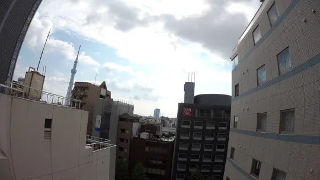
這天的行程重點之一，是打算去新宿的京王百貨找阪神虎的周邊。身為虎迷，在讀賣巨人的大本營東京找阪神專櫃，本身就有點像敵後潛伏的意味。行前翻了香港出版的旅遊書，特地推薦了附近的「武藏麵坊」（麵屋武藏新宿總店），順理成章成了午餐落腳處。
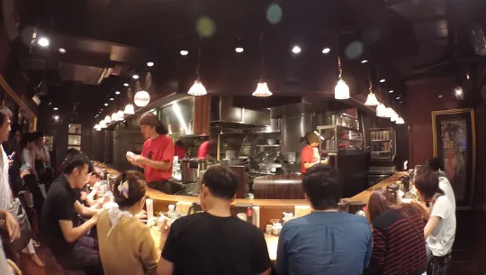
但這趟旅行的血淚經驗是：這本香港旅遊書推薦的餐廳真的都……不太行，完全不會讓人想再次嘗試。反倒是我自己沿路在超商與街邊隨意買的 B 級美食，滿意度高出太多。
出發前還在飯店不知死活地挑戰了日本鮮奶，結果腸胃立刻敲警鐘，二話不說馬上吞胃腸良藥壓壓驚。
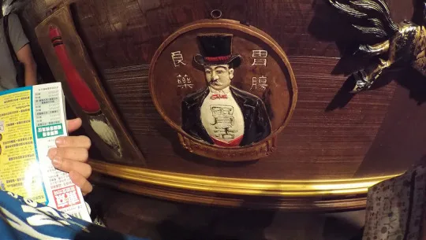
走進麵屋武藏，看看隔壁同行友人拿筷子把麵夾起來的那一瞬間——這份量到底是有多少！剛端上桌時他自己也當場嚇了一跳，整碗麵堆得像座小山。
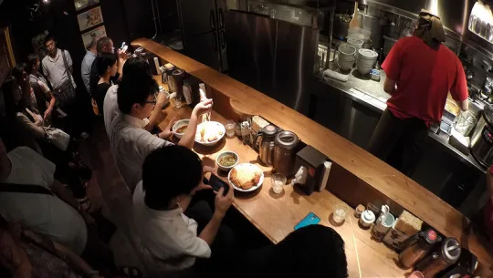
吃麵時瞄到店內的招募海報，上頭大字寫著正職員工月薪 35 萬圓。換算下來讓人忍不住多看了兩眼，這間拉麵店的吸金能力與給薪確實挺硬派。
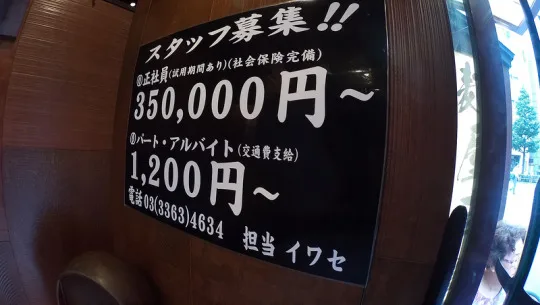
吃飽轉戰京王百貨，滿懷期待跑去找阪神虎周邊專櫃，結果到了現場直接傻眼——專櫃小到不可思議，大概就幾排掛架跟一個小玻璃櫃，完全是象徵性地插旗而已，只能苦笑收工。
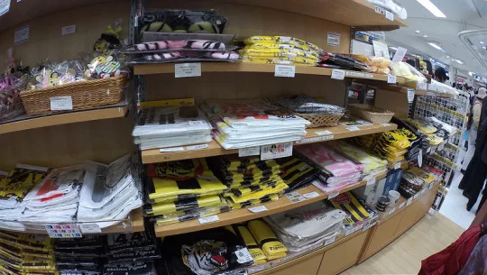
轉身晃去退稅專區，一眼望去整排全都是講華語的遊客，排隊人潮極其可觀。
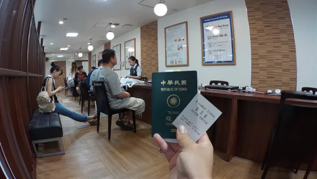
午後散步來到東京都廳，登上免費的展望台。都廳分為南北兩棟展望室，親自看過一輪後，私心覺得南側看到的建築物密度與辨識度較高；北側視野開闊、理論上較有機會遠眺山景，但北區有一大塊最好的窗景被景觀餐廳直接包了下來，必須入內用餐才能坐擁那面視角。
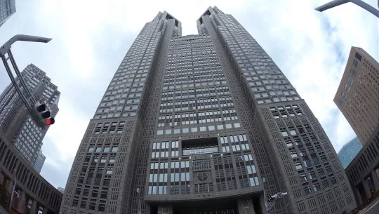
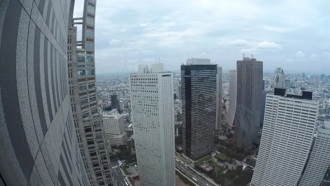
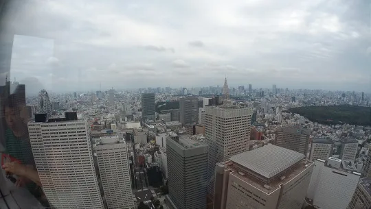
隔著玻璃往下看，整座東京市區的水泥森林在晴空下整齊延展。有些角度帶著前衛的科幻感，讓人忍不住想：未來的東京，大概就是小叮噹（哆啦A夢）飛在空中的那個世界吧！
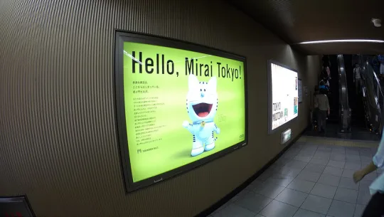
俯瞰密密麻麻的小火車、小汽車與玩具般的樓房，立體感十足——這根本就是貨真價實的「東京小人國」啊！
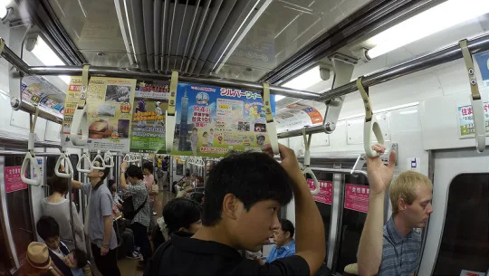